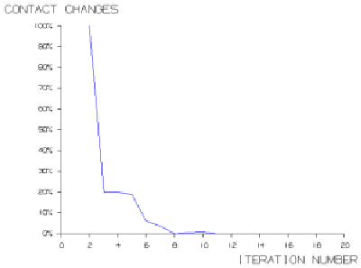

During a contact solve, click the Contact Analysis Convergence tab on the NX Nastran Solution Monitor to monitor the progress of your solution.
The number of contact changes and the current load number are displayed at the top of the Contact Analysis Convergence page, and the graph plots the percentage of contact changes against the iteration number. The solution is considered converged when the percentage of contact changes falls below the specified Contact Changes for Convergence value.

If your solution fails to converge, you can use the Contact Analysis Convergence to determine a more appropriate value for the Allowable Contact Changes criterion.